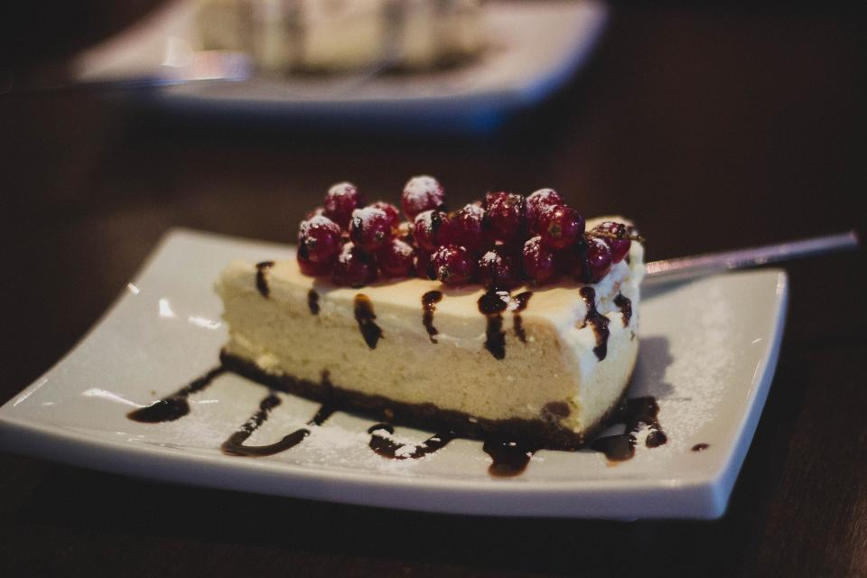

本格スリランカ紅茶の品揃え
紅茶の本場スリランカにルーツを持つ専門店として、豊富な種類の紅茶を取り揃えています。 「紅茶の種類が豊富」とご来店のお客様からも評判で、好みの一杯に出会える楽しみがあります。
寿の街角に、遠い島の紅茶時間を。
千葉県我孫子市寿。住宅街の中にひっそりと構える紅茶専門店MISTYWICKは、 スリランカ出身のオーナーが営む家族経営のお店です。 接客を担うのは、ハーフの息子さん。紅茶に詳しくない方にも一杯ずつ丁寧に語りかけながら、 遠い島国の紅茶を、我孫子の日常に静かに運んでいます。
遠い島国の紅茶文化が、この寿の地でひとつの店として根を下ろしています。
MISTYWICKを営むのは、スリランカ出身のオーナーです。紅茶の産地として知られる島国で 育んできた紅茶への向き合い方を大切にしながら、我孫子市寿の地で小さな専門店を開いています。
店頭に立つことが多いのは、ハーフの息子さん。ご来店のお客様からは 「知識を交えながら、初心者にも玄人にも丁寧に対応してくれる」「人柄がとても素敵だった」 という声が寄せられています。紅茶を普段飲まない方が「素敵なお店だった」と感じて帰られることも あるそうで、専門店にありがちな敷居の高さより先に、まずは一杯の紅茶を楽しんでもらいたいという 姿勢が伝わってくるお店です。
スリランカという遠い土地の紅茶文化と、手賀沼を望む我孫子の暮らし。 その二つをゆるやかに結びながら、親子二代の空気そのままに、今日も店は紅茶を淹れています。
紅茶の本場スリランカにルーツを持つ専門店として、豊富な種類の紅茶を取り揃えています。 「紅茶の種類が豊富」とご来店のお客様からも評判で、好みの一杯に出会える楽しみがあります。
紅茶とあわせて楽しみたいスコーンは、人気の一品としてクチコミでもたびたび紹介されています。 クロテッドクリームも購入いただけ、紅茶とお菓子、両方の時間を一緒に持ち帰ることができます。
接客を担うことが多いのは、オーナーの息子さん。「知識を交えて丁寧に教えてくれた」 「店主の対応が優しく丁寧だった」との声が寄せられるなど、家族経営ならではの温かさが MISTYWICKらしさになっています。
ご来店のお客様が親戚への贈り物として紅茶を選んだところ、「こんな美味しい紅茶は初めてだ」と 大変喜ばれたというエピソードも。日常使いはもちろん、少し特別な贈り物としても選ばれています。
店の外には、ちょっとしたテラス席をご用意しています。 テイクアウトした紅茶を片手に、寿の街角で少しだけ足を止める時間。 近くの公園への散歩の行き帰りに立ち寄って、外の空気の中で一休みするお客様もいらっしゃいます。
Googleクチコミより要約・匿名化して掲載しています(★4.8 / 48件)
紅茶を飲まない私でも素敵と思えるお店でした。息子さんに知識を交えて対応いただき、 初心者から玄人まで楽しめる店だと思います。
スリランカ人のオーナーが営む紅茶専門店。息子さんの接客対応がとても良かったです。 親戚への贈り物にしたところ、「こんな美味しい紅茶は初めてだ」ととても喜んでもらえました。
スコーンと生キャラメルミルクティーを購入。ミルクティーが感動するレベルで美味しく、 生キャラメルの風味もとても良かったです。クロテッドクリームも購入でき、 店主の対応も優しく丁寧でした。
紅茶の種類が豊富で、スコーンも美味しかったです。テイクアウトもでき、 外のちょっとしたテラスで一休みできました。
我孫子市寿の住宅街に佇む、小さな紅茶専門店です。お電話でのお問い合わせ、 またはInstagramでの最新情報のご確認をお待ちしております。
| 屋号 | 紅茶専門店MISTYWICK |
|---|---|
| 住所 | 千葉県我孫子市寿 |
| 電話 | 04-7136-1011 |
| 営業時間 | ○○:○○〜○○:○○(仮) ※正式情報は別途ご案内いたします |
| 定休日 | ○曜日(仮) ※正式情報は別途ご案内いたします |
最新の営業状況・商品情報はInstagramでもご案内しています。
PHOTO SAMPLE(フリー素材によるイメージ写真)
